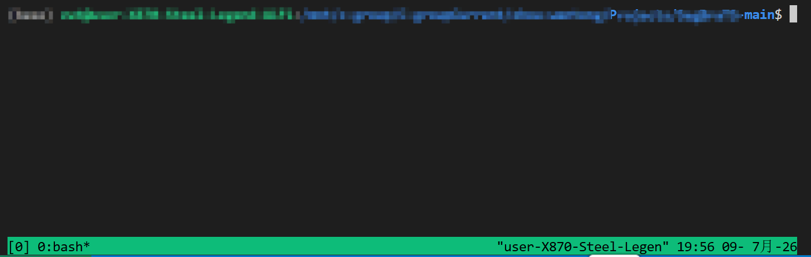
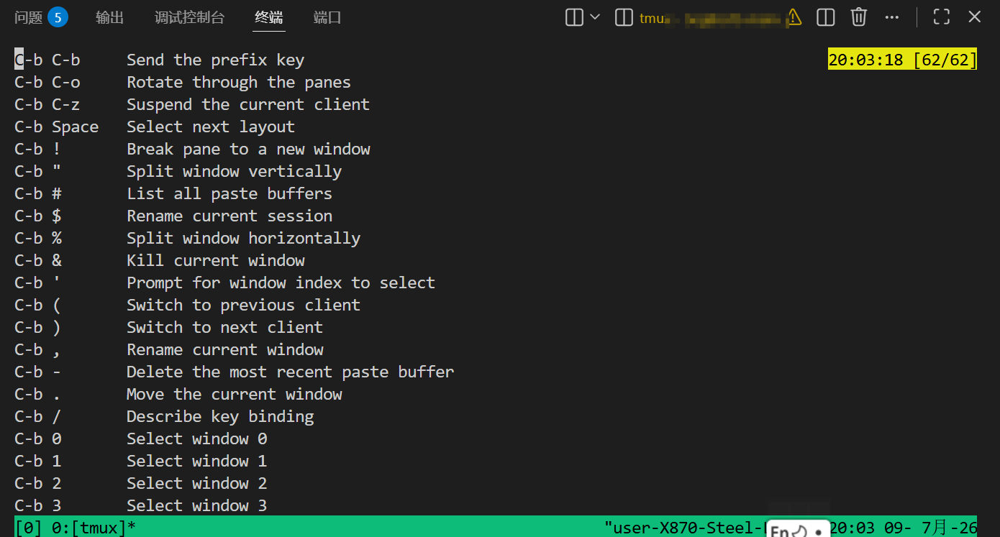
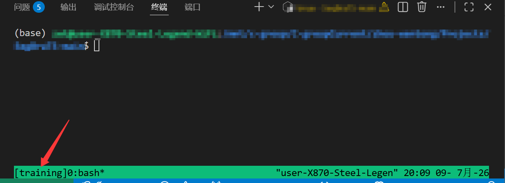
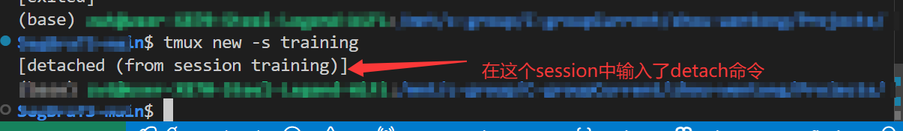
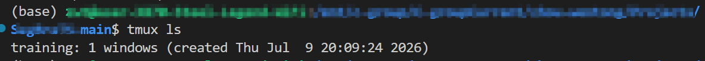
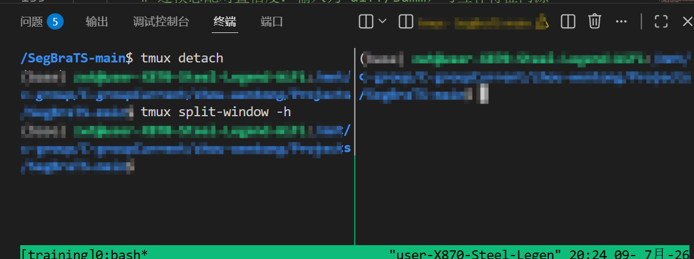
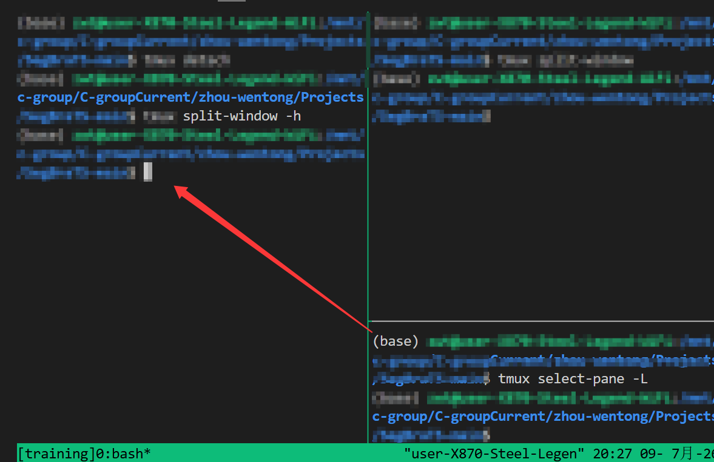
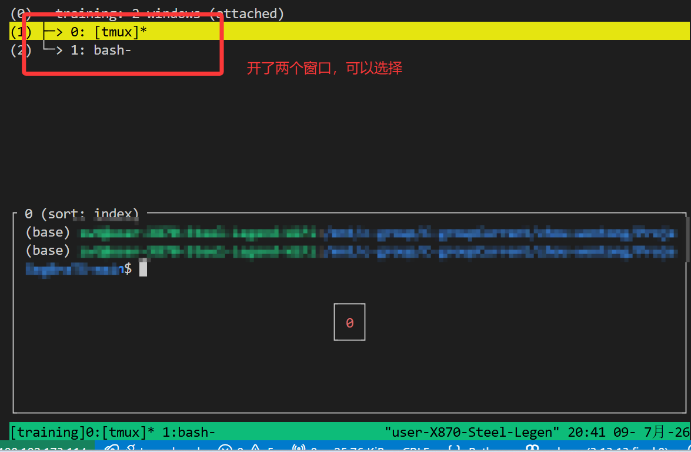

终端复用器tumx配置与使用
使用SSH登录远程计算机，打开远程窗口执行命令，若突然断线，由于SSH会话终止，进程消失，再次登录时就无法找到上次执行命令了。
为解决这个问题，可使用tmux将会话（session）与终端窗口解绑，达成：窗口关闭时，会话并不终止，而是继续运行，等到以后需要的时候，再让会话"绑定"其他窗口。
基本概念
【会话（Session）】
tmux 会话是一个独立的运行环境，可以包含多个窗口。即使断开连接，会话也会继续在后台运行。
【窗口（Window）】
每个会话可以包含多个窗口，类似于浏览器中的标签页。
【面板/窗格（Pane）】
每个窗口可以分割成多个面板，允许同时查看和操作多个终端。
tmux（Terminal Multiplexer）是一个终端复用工具，它允许你在单个终端窗口中创建多个虚拟终端会话，并能保持这些会话在后台运行。与直接使用终端相比，tmux 提供了更强大的会话管理功能。
| 特性 | 窗口 (Window) | 窗格 (Pane) |
|---|---|---|
| 概念类比 | 浏览器的新标签页 (Tab) | 屏幕上的分屏 (Split) |
| 可见性 | 同一时间只能看到一个窗口 | 同一个窗口内，所有窗格同时可见 |
| 空间占用 | 独占整个终端屏幕 | 共享当前窗口的屏幕空间 |
| 数量关系 | 一个会话可以有多个窗口 | 一个窗口可以切分成多个窗格 |
| 默认快捷键 | Ctrl+b 随后按 c (创建) |
Ctrl+b 随后按 % 或 " (分屏) |
【tmux核心优势】
- 会话持久化：即使网络断开，会话仍保留在服务器上
- 多窗口/面板管理：高效组织多个工作环境
- 会话共享：多个用户可以同时连接同一个会话
- 它可以让新窗口"接入"已经存在的会话。
基本使用方法
安装
1 | # Ubuntu 或 Debian |
启动与退出
安装完成后，在终端输入tmux进入Tmux窗口。

按下Ctrl+d或者在终端输入exit即可退出。
前缀键
tmux 的所有快捷操作都需要先按下前缀键（默认是 Ctrl+b），然后输入命令键。
举例——打开帮助：
- 按下
Ctrl+b ?

- 按下
q或者ESC退出
会话管理
创建会话（不直接使用tmux）
默认启动的tmux窗口编号为0，但只是编号的方式并不直观，可用下述命令为创建新的会话并为会话命名：
1 | tmux new -s <session-name> |

后面会讲到如何为会话重命名
分离会话
在Tmux窗口中按下 Ctrl+b d,或者直接输入tmux detach命令，将当前会话与窗口分离。
1 | tmux detach |

上面命令执行后，就会退出当前 Tmux 窗口，但是会话和里面的进程仍然在后台运行。
查看已有会话
1 | $ tmux ls |

或者：Ctrl+b s.
接入已存在会话
tmux attach来接入会话，参数如下设置：
1 | # 使用会话编号 |
杀死会话
1 | # 使用会话编号 |
切换会话
1 | # 使用会话编号 |
重命名会话
将0号会话重命名:
1 | $ tmux rename-session -t 0 <new-name> |
或者： Ctrl+b $
窗口操作
Tmux 可以将窗口分成多个窗格（pane），每个窗格运行不同的命令。以下命令都是在 Tmux 窗口中执行。
划分窗格
1 | # 划分上下两个窗格 |
或者用前缀键的快捷键
1 | Ctrl+b %：划分左右两个窗格。 |

在窗格之间移动光标位置
鼠标点来点去，发现无法将光标聚焦在目标窗格，只能使用命令进行切换移动：
1 | # 光标切换到上方窗格 |
前缀键方式：
1 | Ctrl+b <arrow key>：光标切换到其他窗格。<arrow key>是指向要切换到的窗格的方向键，比如切换到下方窗格，就按方向键↓。 |

交换窗格位置
1 | # 当前窗格上移 |
前缀键：
Ctrl+b{：当前窗格与上一个窗格交换位置。Ctrl+b}：当前窗格与下一个窗格交换位置。Ctrl+bCtrl+o：所有窗格向前移动一个位置，第一个窗格变成最后一个窗格。Ctrl+bAlt+o：所有窗格向后移动一个位置，最后一个窗格变成第一个窗格。
关闭窗格
关闭当前窗格： Ctrl+b x
其他操作
- 当前窗格拆分成独立窗口：
Ctrl+b! - 当前窗格全屏显示/恢复大小：
Ctrl+bz - 按照箭头方向调整窗格大小：
Ctrl+bCtrl+<arrow key> - 显式窗格编号：
Ctrl+bq
窗口管理
除了将一个窗口划分成多个窗格，Tmux 也允许新建多个窗口。
创建窗口
1 | $ tmux new-window |
或者：
Ctrl+b c创建一个新窗口，状态栏会显示多个窗口的信息。
切换窗口
1 | # 切换到指定编号的窗口 |
或者：
Ctrl+bp：上一个窗口Ctrl+bb：下一个窗口Ctrl+b<number>：切换到指定编号窗口Ctrl+bw：从列表中选择窗口。

重命名窗口
1 | $ tmux rename-window <new-name> |
或者： Ctrl+b .
使用技巧
Session恢复
即使重启服务器，也可以恢复tmux session
1 |
|
复制模式
1 | Ctrl+b [ 进入复制模式 |
多pane同时输入相同命令
1 | # 进入同步模式 |
其他
1 | # 列出所有快捷键，及其对应的 Tmux 命令 |